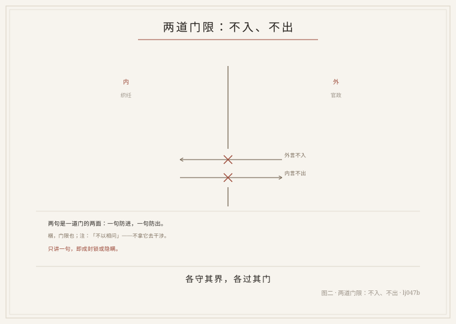

曲礼上 · 一·四十九 · 第 47 课
外面的事不拿进门里去问，家里的事不拿出门外去说。梱是门限；两道门限，一进一出，各拦一头。
说什么事：外言不入于梱，内言不出于梱。
落在哪一层：教。上节讲亲属之间的两处不，此节讲言语的两道门。
为何编在此位：一·四十八讲「不称谢」，此节讲「不相问」；从身体与衣物退到话。
【经】外言不入於梱，內言不出於梱。
梱 郑注：「梱，门限也。」疏本又作「阃」，苦本反。
外言 郑注：「外言、内言，男女之职也。不出入者，不以相问也。」
疏解外言 疏：「外言，男职也……男职在于官政，各有其限域，不得令妇人预之，故云『外言不入于梱』也。」
疏解内言 疏：「内言，女职也。女职谓织纴，男子不得滥预，故云『不出梱』也。」
外面的事不进到门限里来，家里的事不越出门限去。
两句是一个门的两面：外言不入，内言不出。争点不在谁说，在于「职」——各守其限域，不拿对方那一份去问、去管、去说。
第一层 梱是门限，不是墙 注只解「门限」。门限可跨，墙不可跨；所以此节不是隔绝，是过门时的规矩：什么话可以带过去，什么话不可以。
第二层 「不以相问」 注的四个字最要紧：不入不出者，是不拿它去相问。不是禁止知道，是禁止以它为由去干涉。
第三层 外言是官政，内言是织纴 疏把两头落到实处：官政有官政的界，织纴有织纴的界。今日的对应不是男女，是「职务的界」：谁的事，谁去问。
第四层 两句合看 只讲「外言不入」则成封锁，只讲「内言不出」则成隐瞒。两句并立，才是各守其界：不让外面的压力进家，也不让家里的私议出门。
与今日何干 今日一事两病：把单位的事带回餐桌，把家里的话带去会议。此节给的仍是四个字：不入、不出。
| 左 | 右 |
|---|---|
| 外言不入于梱 | 男职在官政，各有其限域 |
| 内言不出于梱 | 女职谓织纴，男子不得滥预 |
| 梱 | 门限也 |
| 不出入者 | 不以相问也 |
| 两句合读 | 各守其界，非相封锁 |
| 今日之界 | 职务之界，非男女之界 |
画一道高高的木门限，门半开：门槛外侧地上散着几片简牍与一枚封泥，内侧地上放着一只织机的筘与一卷未尽的线；两堆东西都止在门槛两边，不越过去。不画人，不写文字。赭色只在门槛的磨损处与封泥。
